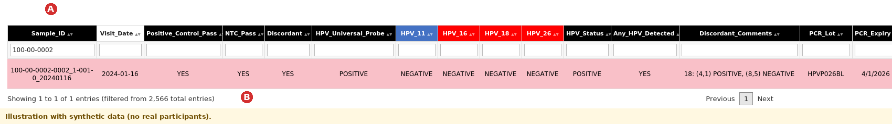
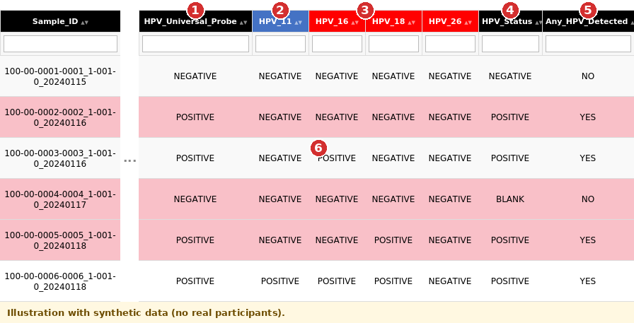
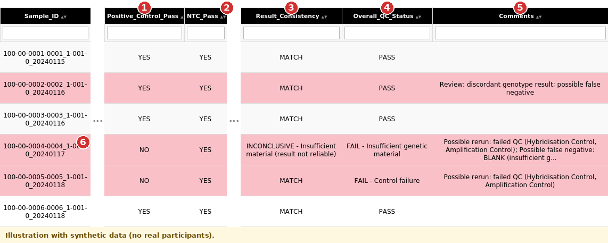
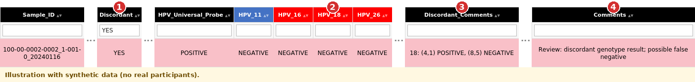
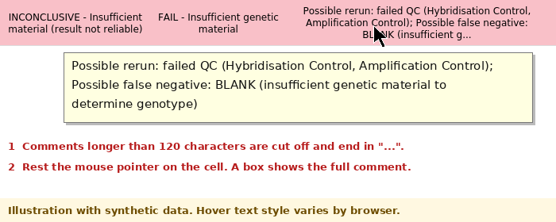
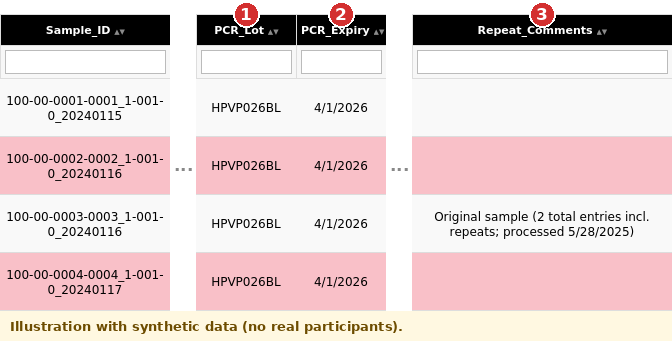
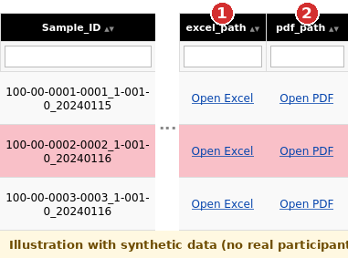

Welcome to the database
The HybriFlow database is a single web page (final_database.html) made by the
HybriFlow package. It has one row for every sample that was tested on the HybriSpot
HPV genotyping platform. For each sample it shows the HPV genotype results, the quality-control checks,
the result printed on the PDF report, the kit lot numbers, and links to the original files.
It opens in any web browser. It does not need R or an internet connection, and you cannot change or delete any data in it. You can only look, search, filter, sort and export.
What you will learn
- What each button on the page does.
- How to find a sample, and how to filter, sort and export rows.
- How to read the HPV result columns and the colours.
- How to tell whether a result can be trusted, and what to do when it cannot.
2. Finding a sample

Sample_ID. (B) The line at the bottom shows how many rows match.- Click the filter box under
Sample_ID(first column) and type the whole ID or part of it, for example100-00-0001. - The table shrinks to the matching rows. The line under the table tells you how many rows match out of the total.
- Check the full
Sample_IDon the row before you read any result. - To go back to all rows, delete the text in the filter box.
Useful filters
| To see... | Type this in the filter box under... |
|---|---|
| All samples that failed quality control | Overall_QC_Status: FAIL |
| All samples with discordant probes | Discordant: YES |
| All samples where HPV 16 was detected | HPV_16: POSITIVE |
| All samples from one year | Visit_Year (a column near the right end): for example 2024 |
| Samples with a repeat | Repeat_Comments: REPEAT or Original |
You can use several filters, and the Search box, at the same time.
100-00-0001-0001_1-004-0_20240729). Always read the whole ID before you
link a result to a participant or a visit.
3. Understanding HPV results

What to read, in this order
- First check the quality control (section 5). Only read the HPV columns when the sample passed.
HPV_Universal_Probeshows whether the test detected HPV DNA of any type.- One column per genotype (
HPV_16,HPV_18, ...).POSITIVEmeans every probe position for that genotype was positive.NEGATIVEmeans it was not detected, or its positions disagreed (see Discordant, section 5). Any_HPV_Detected,High_Risk_HPV_Detected,Low_Risk_HPV_Detectedsummarise the row as YES or NO.High_Risk_Count,Low_Risk_CountandTotal_HPV_Genotypes_Detectedgive the number of genotypes found.HPV_StatusandReport_Resultsshow what the PDF report says (POSITIVE, NEGATIVE or BLANK, and its text).
HPV_Universal_Probe is POSITIVE and no genotype column is POSITIVE,
HPV was detected but its genotype was not determined. The PDF text says "Genotype not determined".
Do not count this sample as negative.
HPV_11, HPV_16, HPV_18, HPV_26, ...
and then HPV_6 and HPV_61 after HPV_59. Use the filter boxes or scroll sideways to find a genotype.
4. Colours and column map
Header colours
| Colour | Meaning |
|---|---|
| Black | Information columns: sample ID, quality control, summaries, PDF report details, lot numbers, comments and file links. |
| Red | High-risk genotypes (for example 16, 18, 31, 33, 45, 52, 58). |
| Blue | Low-risk genotypes (for example 6, 11, 40, 42). |
| White | Visit_Date and Visit_Year. |
Row colours
| Pink row | The sample failed quality control or is discordant. Look at these rows first. Pale grey and white rows are normal rows. |
Where to find what
| You want to know... | Look at these columns |
|---|---|
| Which sample and when | Sample_ID, Visit_Date, Visit_Year |
| Did the run work? | Positive_Control_Pass, NTC_Pass, Overall_QC_Status, Comments |
| Was HPV found, and which types? | HPV_Universal_Probe, the HPV_... genotype columns, Any_HPV_Detected, High_Risk_Count, Low_Risk_Count |
| Do the probes agree? | Discordant, Discordant_Comments |
| Does the PDF agree with the Excel data? | HPV_Status, Report_Results, Result_Consistency |
| Which kit batch was used? | PCR_Lot, Chips_Lot, Reagent_Lot and their _Expiry columns |
| Is this a repeat? | Repeat_Comments |
| The original files | File, excel_path, pdf_path |
5. Understanding quality-control flags
Quality-control information tells you whether a sample's result can be used.

| Column | What it tells you |
|---|---|
Positive_Control_Pass | YES when the hybridisation and amplification controls both worked. NO means the run is not valid for this sample. |
NTC_Pass | YES when the no-template control stayed negative (no contamination signal). |
Overall_QC_Status | PASS, or FAIL with the reason (for example FAIL - Control failure or FAIL - Insufficient genetic material). |
Result_Consistency | Compares the Excel result with the PDF report (below). |
Comments | The suggested action, for example Possible rerun. |
What to do for each outcome
| You see | What it means and what to do |
|---|---|
PASS | The controls worked. You can use the HPV columns. If the row is pink because it is discordant, read the next row of this table. |
FAIL - Control failure | A control did not work. Do not rely on the genotype results. The comment says Possible rerun. Follow your study's repeat-testing procedure. |
FAIL - Insufficient genetic material (PDF says BLANK) | There was not enough DNA to test. A negative-looking row does not mean HPV-negative. The comment says Possible false negative and Possible rerun. |
Discordant = YES | The probe positions of at least one genotype disagreed. That genotype is shown as NEGATIVE. See the next section. |
| Empty cell where a result should be | Check the PDF and Excel file (use the links, section 6). Never treat an empty result as negative. |
| A flag you do not recognise | Ask the person who maintains the pipeline before you interpret it. |
Result_Consistency: does the PDF agree?
| Value | Meaning |
|---|---|
MATCH | The Excel result and the PDF report agree. This is what you expect. |
MATCH - Universal probe positive only | The PDF says NEGATIVE but the universal probe was positive with no genotype. This does not invalidate a negative PDF result. |
INCONCLUSIVE - Insufficient material | The PDF says BLANK. The result is not reliable. |
CANNOT COMPARE | There is no PDF status for this sample. |
MISMATCH | The Excel result and the PDF disagree. Open the PDF and check. |
Discordant samples
Every genotype is printed at one or two positions on the chip. If the positions of one genotype do not agree, the sample is Discordant,
that genotype is reported NEGATIVE, and the positions are listed in Discordant_Comments, for example 18: (4,1) POSITIVE, (8,5) NEGATIVE.

YES under Discordant). (1) Discordant. (2) The genotype columns. (3) Which probe positions disagreed. (4) Suggested action.Discordant samples that passed QC are marked Review: discordant genotype result; possible false negative. Review the original probe-level results and follow the study's repeat-testing protocol.
Long comments and the pop-up
Comments longer than 120 characters are cut off with "...". Rest the mouse pointer on the cell and a small box shows the whole comment.

QC review checklist
6. Repeats, kit lot numbers and source files
Repeated samples

Repeat_Comments is filled in when the same sample was tested more than once. It says, for example,
Original sample (2 total entries incl. repeats; processed 5/28/2025) for the first test, and
REPEAT #1 of sample ... (processed ...) for a repeat. The main database keeps every entry.
Only the QC-passed Excel file removes repeats (as chosen when the pipeline was run).
Kit lot numbers
The PCR, chip and reagent lot numbers and expiry dates come from the PDF report. If a batch turns out to be faulty or expired, filter the lot column to find every sample that used it.
Opening the original files

File column to find the PDF name and ask the
research team for the file.
7. Troubleshooting
I cannot find a sample
Check the spelling and try only a part of the ID, such as the first 12 characters. Remove all filters and clear the Search box.
If the sample is still missing, it may not have been processed: check run_summary.txt (button E) for excluded files.
A result cell is empty
Check the Excel file and the PDF using the links. An empty cell is not a negative result. If the sample has no PDF, HPV_Status is empty and Result_Consistency says CANNOT COMPARE.
Visit_Date or Visit_Year is empty
The date is read from the Sample ID. If the ID has no readable date, the cell stays empty (the pipeline does not guess).
These IDs are listed in Sample_IDs_without_year.csv in the output folder.
A sample has a quality-control flag
Read section 5 and follow your study's repeat-testing procedure. Record any review you do.
I cannot find HPV 6 (or another genotype)
Genotype columns are sorted as text, so HPV_6 comes after HPV_59. Scroll sideways, or use the Search box.
Open Excel / Open PDF does nothing
The links only work on the computer where the pipeline was run and while the files are still in the same folders.
A button at the top does nothing
The buttons open files in the same folder as this page. Keep all files from the output folder together (or unzip the whole archive). The follow-up buttons appear only when the follow-up analysis was run.
A picture is missing from this guide
Check that the image is in the guide_screenshots folder next to this file and that the file name matches.
Completion checklist
Use this checklist when you are learning the database.
0 completed